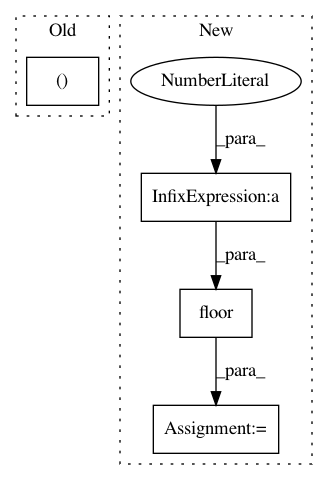

a7f56602f849c90572c919a719b43ff0bea580a8,official/vision/beta/projects/yolo/modeling/layers/nn_blocks.py,ConvBN,build,#ConvBN#Any#,111
Before Change
After Change
kernel_size = self._kernel_size if type(self._kernel_size) == int else self._kernel_size[0]
dilation_rate = self._dilation_rate if type(self._dilation_rate) == int else self._dilation_rate[0]
if self._padding == "same" and kernel_size != 1:
padding = dilation_rate * (kernel_size - 1)
left_shift = tf.cast(tf.math.floor(padding/2), dtype = tf.int32)
self._zeropad = tf.keras.layers.ZeroPadding2D([[left_shift, left_shift], [left_shift, left_shift]])
else:
self._zeropad = Identity()
In pattern: SUPERPATTERN
Frequency: 4
Non-data size: 4
Instances
Project Name: tensorflow/models
Commit Name: a7f56602f849c90572c919a719b43ff0bea580a8
Time: 2020-11-08
Author: banna3vishnu@gmail.com
File Name: official/vision/beta/projects/yolo/modeling/layers/nn_blocks.py
Class Name: ConvBN
Method Name: build
Project Name: grrrr/nsgt
Commit Name: d6df6857ff7493bfb4818241cf5edb30fe751e97
Time: 2011-03-30
Author: gr@grrrr.org
File Name: src/nsgtf.py
Class Name:
Method Name: nsgtf
Project Name: NifTK/NiftyNet
Commit Name: c8b28432a637a780eed96547260722ff3dede57e
Time: 2017-10-04
Author: wenqi.li@ucl.ac.uk
File Name: niftynet/engine/sampler_selective.py
Class Name:
Method Name: rand_choice_coordinates
Project Name: KrishnaswamyLab/PHATE
Commit Name: b912ae50a0ca1766eceb062973e2952997285fac
Time: 2018-04-04
Author: scottgigante@gmail.com
File Name: Python/phate/phate.py
Class Name: PHATE
Method Name: von_neumann_entropy